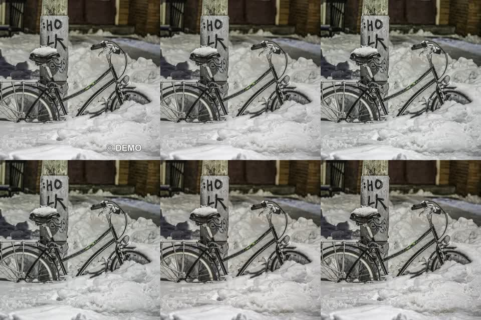
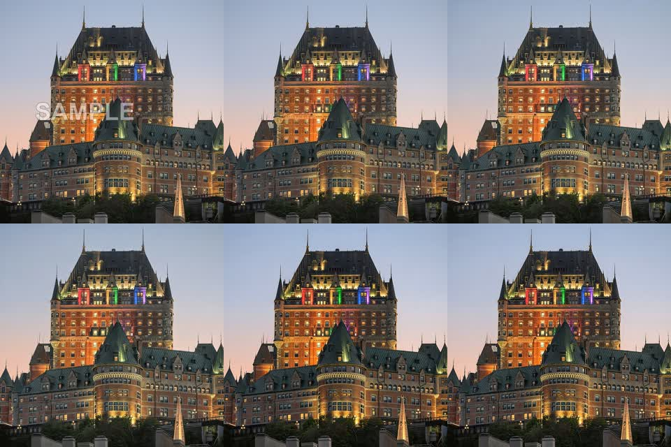
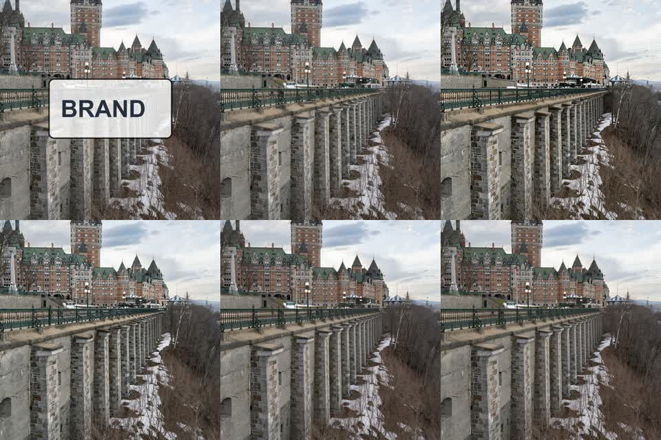
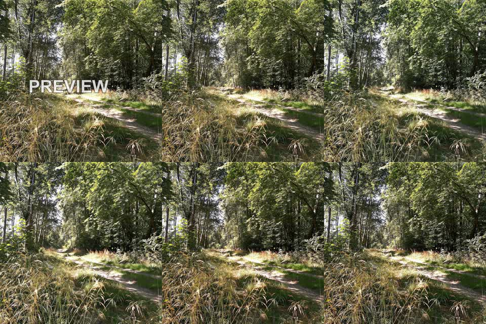
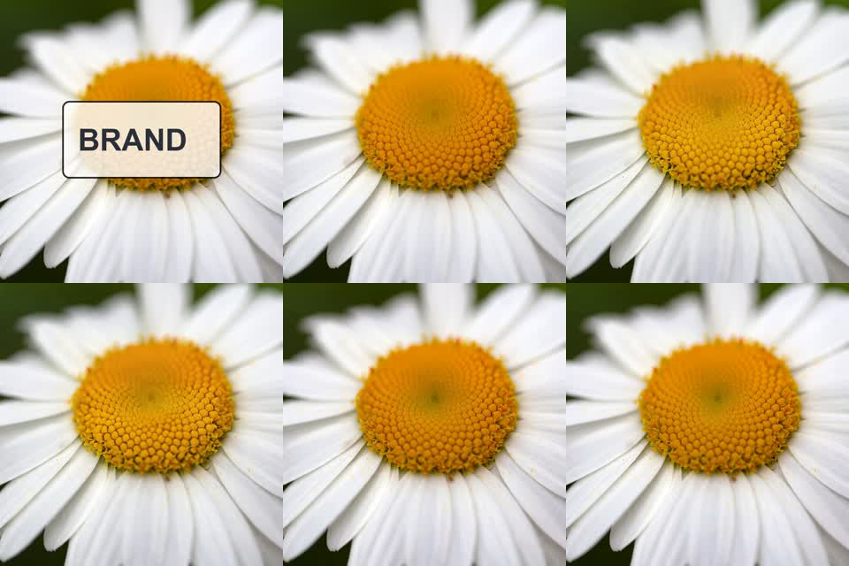

01 · 角落文字
四路结果均去除角落文字，未见明显非目标改动。

2026-09-24；沿用
阶段 0 的许可样本，选取四类水印各一张，加上细节敏感的 19
号样本。每张通过本地 /api/watermark/remove 分别请求 Lite / Flash × 直接 / 指定区域，共 20 次。
20 次均返回 HTTP 200 和 2048×2048 PNG。Lite 的 10 次请求中位耗时 32.73 秒，Flash 为 22.61 秒；按当时目录价估算共 ¥3.40，实际账单未在本报告核对。五张样本的水印均未见可辨残留，但生成结果会重绘其他区域。19 号样本中 Flash 两种模式都明显抹平花心纹理，Lite 保留更多细节。因此页面默认使用 Lite，Flash 仍可选。此结论只覆盖所列样本。
每张拼图从左到右、从上到下依次是：带水印输入、干净参考、Lite 直接、Lite 指定区域、Flash 直接、Flash 指定区域。图片是压缩预览；请求状态、耗时、尺寸和字节数见 results.json。原始 2K 输出保存在本地临时评测目录。
四路结果均去除角落文字，未见明显非目标改动。

四路结果均去除半透明文字；建筑窗框和夜景亮度仍需放大检查。

四路结果均去除标识，遮挡下的栏杆和石材由模型重建，不能视为原图细节恢复。

四路结果均去除文字；草木纹理和局部亮度发生不同程度的重绘。

四路结果均去除标识；Flash 直接与指定区域两种结果均明显抹平花心颗粒，Lite 保留更多可见纹理。这是默认模型选择的关键样本。
